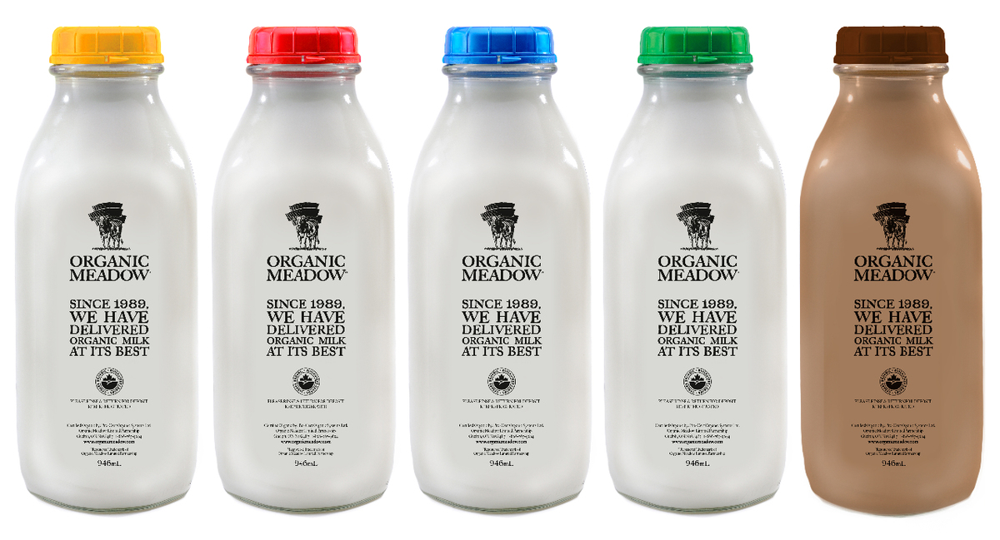

Looking to return your empty glass bottles? Some stores have started accepting glass bottle returns. In Toronto, you can return them to Fortino's, Beach Valumart, McEwan's, Fresh Fields, Garden Milk & Variety, Bathurst Village Market and Burnhamthorpe Fruit Market (Mississauga). Contact your local store for details.
Go